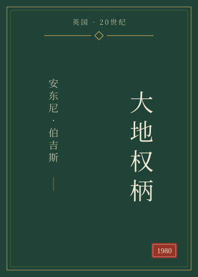
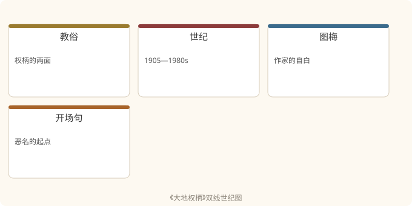

大地权柄
一、基本信息
| 作者 | 伯吉斯 |
|---|---|
| 成书/出版 | 1980年（作者页 B127 口径：大地权柄（1980）） Anthony Burgess — Encyclopaedia Britannica（百科全书） |
| 国别/地区 | 英国 |
| 时代 | 现当代 · 20世纪 |
| 体裁 | 长篇小说 |
| 语言 | 英语 |

《大地权柄》双线世纪图（主题·结构图）
二、创作背景
作者页（B127）：伯吉斯 major_works 载'大地权柄（1980）'（B127 作者页定位，详见 fatiaocheng 条核对）。
题材（通说待核）：同性恋作家与教皇候选人的双线世纪史——'神恩'与'世俗权力'。
三、内容脉络
肯尼思·图梅的开场句——'粗俗'的世纪回溯（通说待核）。
四、主要人物表
| 人物 | 身份 | 说明 |
|---|---|---|
| 肯尼思·图梅 | 作家 | （通说待核） |
| 卡洛·博尔巴诺? | 教皇候选 | （通说待核） |
五、主题与艺术特点
- '大地权柄'：教俗两界（通说待核）。
- 20世纪全景（通说）。
- 开场句的文学史地位（通说待核）。
六、影响与评论
- 作者页：伯吉斯代表作（B127 作者页口径）。
Anthony Burgess — Encyclopaedia Britannica（百科全书） - 作者页：《发条橙》作者（B127 作者级定位）。
Anthony Burgess — Encyclopaedia Britannica（百科全书）
七、阅读建议
难点
- 世纪跨度。
- 开场句的恶名。
- 《大地权柄》（中译本信息待核）。
- 英文原版（Hutchinson）。
伯吉斯进阶之作。
八、待核实
- 1980年出版核对。
- 图梅人名核对。
- 开场句（'It was the afternoon of my eighty-first birthday…'）核对。
本页主要来源
伯吉斯的其他收录作品：发条橙